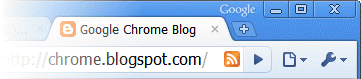

Except as otherwise noted, the content of this page is licensed under the Creative Commons Attribution 3.0 License, and code samples are licensed under the BSD License.
©2011 Google
Use page actions to put icons inside the address bar. Page actions represent actions that can be taken on the current page, but that aren't applicable to all pages. Some examples:
The RSS icon in the following screenshot represents a page action that lets you subscribe to the RSS feed for the current page.
If you want the extension's icon to always be visible, use a browser action instead.
Note: Packaged apps cannot use page actions.
Register your page action in the extension manifest like this:
{
"name": "My extension",
...
"page_action": {
"default_icon": "icons/foo.png", // optional
"default_title": "Do action", // optional; shown in tooltip
"default_popup": "popup.html" // optional
},
...
}
Like browser actions, page actions can have an icon, a tooltip, and popup; they can't have badges, however. In addition, page actions can appear and disappear. You can find information about icons, tooltips, and popups by reading about the browser action UI.
You make a page action appear and disappear using the show() and hide() methods, respectively. By default, a page action is hidden. When you show it, you specify the tab in which the icon should appear. The icon remains visible until the tab is closed or starts displaying a different URL (because the user clicks a link, for example).
For the best visual impact, follow these guidelines:
You can find simple examples of using page actions in the examples/api/pageAction directory. For other examples and for help in viewing the source code, see Samples.
Gets the html document set as the popup for this browser action.
The callback parameter should specify a function that looks like this:
function(string result) {...};
Gets the title of the browser action.
The callback parameter should specify a function that looks like this:
function(string result) {...};
Hides the page action.
Sets the icon for the page action. The icon can be specified either as the path to an image file or as the pixel data from a canvas element. Either the path or the imageData property must be specified.
Sets the html document to be opened as a popup when the user clicks on the page action's icon.
Sets the title of the page action. This is displayed in a tooltip over the page action.
Fired when a page action icon is clicked. This event will not fire if the page action has a popup.